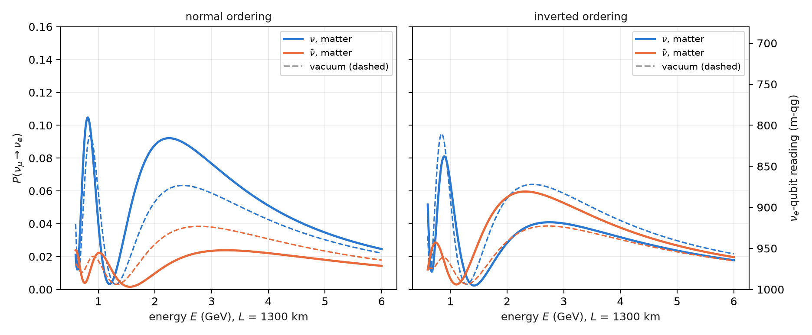
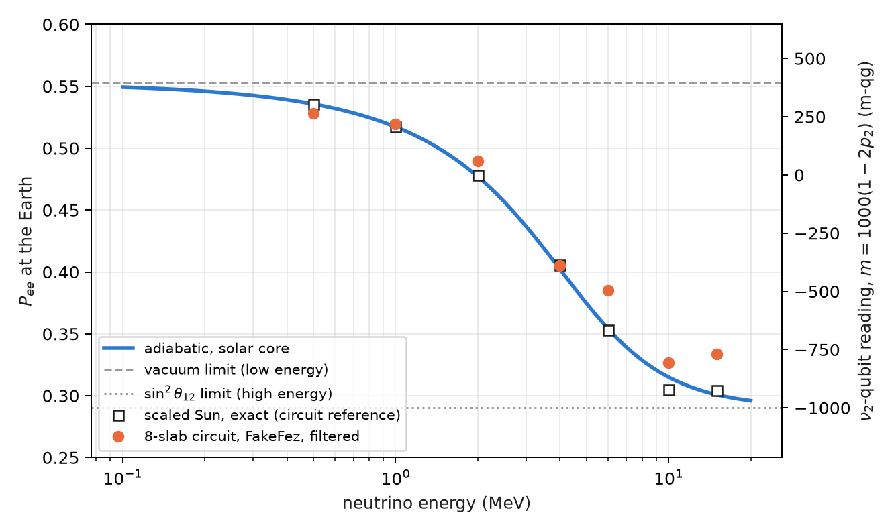
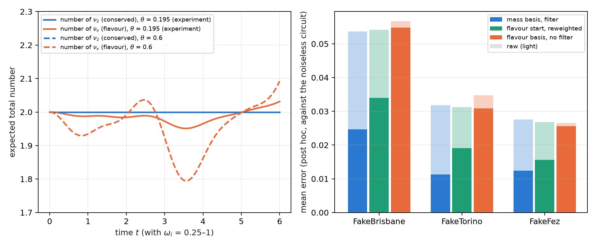

10 Matter effects, solar neutrinos and collective oscillations
Chapter 9 left the neutrino in vacuum. But a 1300 km beam crosses the Earth, solar neutrinos are born at the centre of the Sun, and in a supernova neutrinos are so dense that they interact with each other. In all three cases the medium adds a term to the flavour Hamiltonian, and the chapter’s question is the same in all three: which number is still conserved, because that decides whether the qg filter applies, and in which basis. On the base of Chapter 1, each effect of the medium is read as a shift in milli-qang, on the same scale as shot noise.
10.1 From the base: the medium as a shift in m-qg
Each flavour (or mass) qubit is read as in Chapter 9, \(m=1000\,(1-2P)\) m-qg, so an effect of the medium that changes a probability by \(\delta P\) is a shift of \(2000\,\delta P\) m-qg, directly comparable with the resolution \(\sigma_m=2000\sqrt{P(1-P)/N}\). Three examples from this chapter, on that scale:
| effect | \(\delta P\) | in m-qg |
|---|---|---|
| matter on \(P(\nu_\mu\to\nu_e)\), 1300 km, 2.6 GeV, normal ordering | 0.063 → 0.087 | 48 |
| fake asymmetry from matter at \(\delta_{CP}=0\) | 0.042 | 84 |
| solar MSW drop of \(P_{ee}\), 0.5 → 10 MeV, read on the \(\nu_2\) qubit | \(p_2\): 0.35 → 0.93 | 1173 |
With 1000 shots and \(P\approx0.07\) the resolution is about 16 m-qg: the Earth’s effect shows at 3σ in a single circuit, and the solar drop spans most of the scale.
10.2 The MSW effect in the Earth
Electrons in the Earth forward-scatter \(\nu_e\) and add to the flavour Hamiltonian a potential \(A=2\sqrt2\,G_FN_eE\), which in oscillation units is
\[ A=1.52\times10^{-4}\,Y_e\,\rho[\mathrm{g/cm^3}]\,E[\mathrm{GeV}]\ \mathrm{eV}^2 , \]
with the opposite sign for antineutrinos (Mikheyev–Smirnov–Wolfenstein). In the crust (\(\rho=2.85\) g/cm³, \(Y_e=0.5\)) and at 2.6 GeV, \(A=5.6\times10^{-4}\) eV², 22% of \(\Delta m^2_{31}\): not a small correction.
The potential acts on \(\nu_e\) only, that is, it is a phase on qubit 0. The circuit alternates the exact vacuum step of Chapter 9 with that phase (second-order, or Strang, Trotter), and every gate still conserves the weight: the qg filter applies just as in vacuum (§152). With \(L=1300\) km and between 0.8 and 5 GeV:
| check | result |
|---|---|
| M1 noiseless Trotter error, \(r=2\) / \(4\) (needed \(<0.005\) / \(<0.001\)) | 0.0052 / 0.0011 — failed narrowly |
| M2 matter-only asymmetry at \(\delta_{CP}=0\), 2.6 GeV | 0.042 (the vacuum CP signal was 0.025) |
| M3 best error raw / filter + readout | Brisbane 0.046 / 0.017, Torino 0.027 / 0.009, Fez 0.023 / 0.014 (median 2.8×) |
| M4 optimal steps with filter \(\ge\) without | \(r^\ast=1\) everywhere (holds vacuously) |
| M5 \(A_{CP}(\delta_{CP}=0)\), filter + readout, \(r=2\) | 0.035, 0.035, 0.029 (exact 0.042; Trotter \(r=2\): 0.033) |
Three lessons. Matter fakes CP violation: at \(\delta_{CP}=0\), where vacuum gives no asymmetry at all, the Earth produces 84 m-qg of difference between \(\nu\) and \(\bar\nu\), more than the 50 m-qg of Chapter 9’s CP signal; that is why long-baseline experiments must model matter, and the filtered circuit sees it. There is no depth trade-off: a single Trotter step already has less error (0.012) than the noise, so \(r^\ast=1\) with or without the filter, and M4 holds only because both are 1. And M5’s gap to the exact value is Trotter error, not noise: the filtered values sit within 0.004 of the \(r=2\) Trotter value.
10.3 The mass ordering read through matter
Vacuum cannot tell the sign of \(\Delta m^2_{31}\); matter can, because what matters is the sign of the product \(A\,\Delta m^2_{31}\). In normal ordering (\(\Delta m^2_{31}>0\)) matter enhances \(\nu_\mu\to\nu_e\) and suppresses the antineutrino channel; in inverted ordering, the reverse (Figure 10.1). With the exact values at 2.6 GeV:
| \(\nu\), vacuum | \(\nu\), matter | \(\bar\nu\), vacuum | \(\bar\nu\), matter | |
|---|---|---|---|---|
| normal | 0.063 | 0.087 | 0.038 | 0.021 |
| inverted | 0.063 | 0.041 | 0.039 | 0.058 |

On the simulated noise models, with the \(r=2\) Trotter circuit and the filter, the ordering is read correctly on all three devices, with the right sign of the \(\nu/\bar\nu\) asymmetry (§163). The filtered values sit 0.010–0.033 above the noiseless-circuit reference (prediction O3 failed): noise inside the sector moves probability toward the other flavours. But the bias is common, and the difference between orderings survives: 0.034–0.036 against 0.037 in the reference.
10.4 Solar neutrinos: the whole Sun is one rotation
A \(\nu_e\) is born at the solar core, where \((\rho Y_e)\approx100\) g/cm³, and travels out to vacuum. At low energy matter barely matters and it reaches the Earth with the averaged vacuum probability; above the resonance (about 2 MeV at the core), the central density turns the matter mixing angle \(\theta_m\) almost to 90°, the neutrino adiabatically follows the heavy eigenstate and leaves the Sun as \(\nu_2\). The phases are lost on the way to the Earth, so what arrives is a population in the mass basis, and the survival probability (§156)
\[ P_{ee}=c_{13}^4\left(\cos^2\theta_{12}\,p_1+\sin^2\theta_{12}\,p_2\right)+s_{13}^4 \]
is linear in \(qg_Z\) of the \(\nu_2\) qubit. It falls from 0.54 to 0.30 between 0.5 and 15 MeV (Figure 10.2); on the \(\nu_2\) qubit that is going from \(+304\) to \(-868\) m-qg, more than half of the scale.

The circuit uses two effective flavours (\(\nu_3\) decoupled; it agrees with three flavours to 0.001) and a scaled Sun: an exponential profile with a 100 km scale height, cut into \(r\) slabs uniform in \(\theta_m\). Each slab is one exact \(2\times2\) propagator, \(R_Z\cdot\mathrm{RBS}\cdot R_Z\) on two qubits in the weight-1 sector, and the filter applies. All six pre-registered predictions held:
| read-out (mean \(P_{ee}\) error against the noiseless circuit) | Brisbane | Torino | Fez |
|---|---|---|---|
| slabs \(r=8\), raw / filter + readout | 0.025 / 0.011 | 0.018 / 0.008 | 0.027 / 0.015 |
| compiled (a single RBS), raw / filter + readout | 0.008 / 0.002 | 0.005 / 0.002 | 0.006 / 0.003 |
| one qubit, raw / readout | 0.004 / 0.002 | 0.031 / 0.003 | 0.004 / 0.002 |
| MSW drop \(P_{ee}(0.5)-P_{ee}(10\ \text{MeV})\), \(r=8\) filtered (exact 0.231) | 0.218 | 0.218 | 0.202 |
The filter gains 1.9–2.3× on the slab circuit, as in the Earth. But the important result is another one: the physics makes the circuit unnecessary. Because the phases are lost before detection, the observable is a single population, and the compiled circuit (the whole Sun in the one RBS that loads \(p_2\)) beats every slab circuit even without the filter; with two flavours, one qubit with readout correction is as good as anything. The adiabatic answer is classical, \(\sin^2\theta_m\) at the core. A quantum computer could add something only where coherence survives: day–night regeneration in the Earth, or the collective effects of the next section.
Open: the real Sun. The profile is scaled (the real one has a scale height of about \(6\times10^4\) km and is far more adiabatic, with the same adiabatic answer), and the slab discretization error (0.009 at \(r=8\)) is of the size of the filtered noise. The comparison with a Standard Solar Model density profile has not been done: it stays a proposal, not a result.
10.5 Collective oscillations: what is conserved is the mass number
In a supernova the neutrino density is so high that neutrinos scatter off each other. With \(N\) two-flavour neutrinos, one qubit each, in the single-angle approximation, the Hamiltonian in the mass basis is
\[ H_m=-\sum_i\frac{\omega_i}{2}Z_i+\frac{\mu}{2N}\sum_{i<j}\boldsymbol\sigma_i\cdot\boldsymbol\sigma_j , \]
with \(\omega_i=\Delta m^2/2E_i\) and \(\mu\) the neutrino–neutrino coupling. Section §151 had named these gases a natural target for the filter because “the total flavour number is conserved”. That holds only for the neutrino–neutrino term. The product \(\boldsymbol\sigma_i\cdot\boldsymbol\sigma_j\) is the same in every basis, but the vacuum term is diagonal only in the mass basis: what is conserved is the number of \(\nu_2\), not the flavour number (§154). Figure 10.3 shows it with the exact evolution of four neutrinos: the number of \(\nu_2\) is constant and the number of \(\nu_x\) moves, a little at the experiment’s angle and more at a large angle.

A flavour initial state is a superposition of mass sectors with known, conserved probabilities (for \(\nu_e\nu_e\nu_x\nu_x\) at \(\theta=0.195\): 0.863 in the two-\(\nu_2\) sector and 0.067 in each neighbour). The function reweight_sectors rescales each sector to its probability; when the distribution is a delta, it is the filter.
All seven pre-registered predictions failed, for one reason: the noiseless Trotter error (0.095) was larger than the whole noisy error against the exact evolution (0.074–0.088), so every read-out was scored mostly on Trotter error. A post hoc analysis, not pre-registered, scored against the noiseless circuit, gives what the predictions meant to measure:
| simulated device | mass basis, raw / filter | flavour start in mass basis, raw / reweighted | flavour basis, raw / readout |
|---|---|---|---|
| FakeBrisbane | 0.054 / 0.025 | 0.054 / 0.034 | 0.057 / 0.055 |
| FakeTorino | 0.032 / 0.011 | 0.031 / 0.019 | 0.035 / 0.031 |
| FakeFez | 0.028 / 0.012 | 0.027 / 0.016 | 0.027 / 0.026 |
The filter on the conserved mass number gains 2.2–2.8×; the known distribution over sectors, 1.6–1.7×; and in the flavour basis, where nothing is conserved, there is no gain beyond readout correction. The lesson for the next pre-registration is on record: score against the noiseless circuit when the Trotter error is not known to be small, or measure that error before fixing the predictions.
10.6 Without qang and with qang
| action | without qang | with qang | difference |
|---|---|---|---|
| quantify an effect of the medium | probability change \(\delta P\) | shift of \(2000\,\delta P\) m-qg | unit: lets the Earth, the fake asymmetry and the Sun be tabulated on one scale with the noise |
| read solar survival | \(P_{ee}\) linear in the population \(p_2\) | linear in \(qg_Z\) of the \(\nu_2\) qubit | equivalent |
| simulate the Earth with noise | unfiltered Trotter circuit | with the weight filter: 2.8× in the median | the filter’s, not qang’s |
| collective oscillations | flavour-basis reading: no gain | filter in the mass basis: 2.2–2.8× (post hoc) | the conserved number’s; qang does not decide which number is conserved |
Balance. In this chapter qang is the presentation scale. Everything that improves the simulation comes from identifying the conserved number and filtering on it, and the table says so.
10.7 In code
import math
from qang import neutrino as nu
from qang.sectors import reweight_sectors
# the Earth: exact matter probabilities and the weight-preserving Trotter circuit
P = nu.matter_probabilities(L=1300, E=2.6, delta_cp=-math.pi / 2, rho=2.85) # P[mu, e] = 0.087
qc = nu.matter_trotter_circuit("mu", L=1300, E=2.6, delta_cp=-math.pi / 2, rho=2.85, steps=2)
nu.cp_asymmetry(L=1300, E=2.6, delta_cp=0.0, rho=2.85) # 0.042: matter, not CP
Pio = nu.matter_probabilities(1300, 2.6, -math.pi / 2, 2.85, params=nu.NUFIT_IO) # P[mu, e] = 0.041
# the Sun: the adiabatic answer and the compiled circuit (a single RBS)
nu.solar_pee_adiabatic(0.010) # 0.315 at 10 MeV
qc_sun = nu.solar_circuit(0.010, h=100.0, X=800.0, r=8, compiled=True)
# collective oscillations: the conserved mass sectors of a flavour state
nu.mass_sector_probabilities("eexx", theta=0.195) # [0.001, 0.067, 0.863, 0.067, 0.001]10.8 Summary
- An effect of the medium that changes a probability by \(\delta P\) is a shift of \(2000\,\delta P\) m-qg, comparable with shot noise on the same scale.
- The Earth adds a phase on the \(\nu_e\) qubit; the Trotter circuit conserves the weight, the filter gains 2.8× in the median, and a single step is enough.
- Matter fakes CP violation (84 m-qg at \(\delta_{CP}=0\)) and reveals the mass ordering: the sign of the shift flips between normal and inverted.
- In the Sun, \(P_{ee}\) is linear in \(qg_Z\) of the \(\nu_2\) qubit and falls by 1173 m-qg; since the phases are lost, the whole Sun is one rotation, and the answer is classical.
- In collective oscillations the number of \(\nu_2\) is conserved, not the flavour number: the filter works in the mass basis (2.2–2.8×, post hoc) and not in the flavour basis; all seven pre-registered predictions failed on Trotter error.
- The comparison with a realistic solar density profile is still open.
Bibliographic notes
The matter effect is Wolfenstein (1978) and Mikheyev and Smirnov (1985); the parameters, Esteban et al. (2020) and Navas et al. (2024). For collective neutrino oscillations, see the review Duan et al. (2010). The numbered research notes (§) cited in this chapter and the scripts that check it are in the repository (Monteverde 2026a); the definition of the qang unit is in Monteverde (2026b).